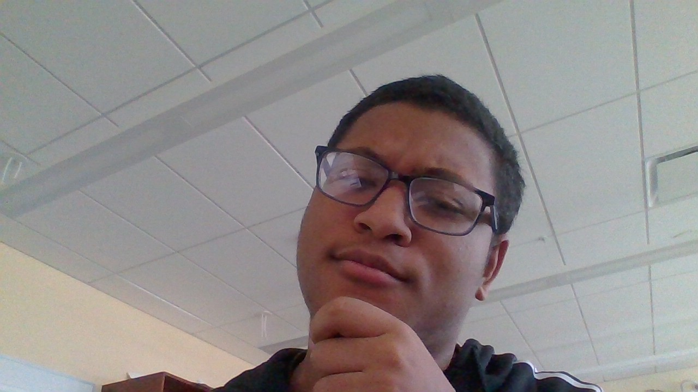
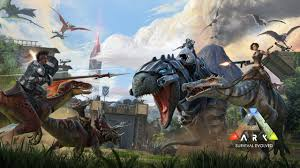

Welcome to my About Page

Name: Kwest Koduah
Contact: School Email: 28kkoduah@pittsfield.net
Age: 16 years old
School: Taconic High School |10th Grade | Expected Graduation: June 2028
Current GPA: 95.6
Experience
McDonalds | Pittsfield, MA | March 2026 – Present
Position: Crew Member
• Greeting guests, managing orders, and ensuring a positive experience.
• Serving food and beverages according to safety, quality, and hygiene standards
• Operating registers, processing payments (cash/card), and providing accurate change.
• Assisting with stocking, working efficiently during peak times, and communicating with team members and managers.
Past Schools: Reid Middle School, Morningside Community School
Projects
Horticulture Project: A project that I made with my friend Isaiah for the Horticulture shop at Taconic High School
This Webpage your reading from: A project that just sums up information about me and presents it on this very webpage
Favorites: Food & Drink
.jpeg)
Pumpkin Pie: This is easily the best food in the world. In my opinion, it is a 10/10 dessert and I could eat it forever!
.jpeg)
Sprite: My favorite drink (besides water). I love anything lemon-lime flavored, but Sprite is my all time favorite.
Gaming & Hobbies
Roblox: I spend a lot of my time on Roblox with friends. I enjoy the variety of genres available on the platform.

Ark: Survival Evolved: An amazing survival game set in a unique dinosaur-themed world. It is one of the best games I've played.
.jpeg)
Steam: I use this platform to manage and play the large majority of my gaming library.
Travel & Life
.jpeg)
I love traveling with my family. Visiting Ghana to see my cousins and my Dad's side of the family is always fun. I enjoy exploring new places and seeing things I've never seen before.